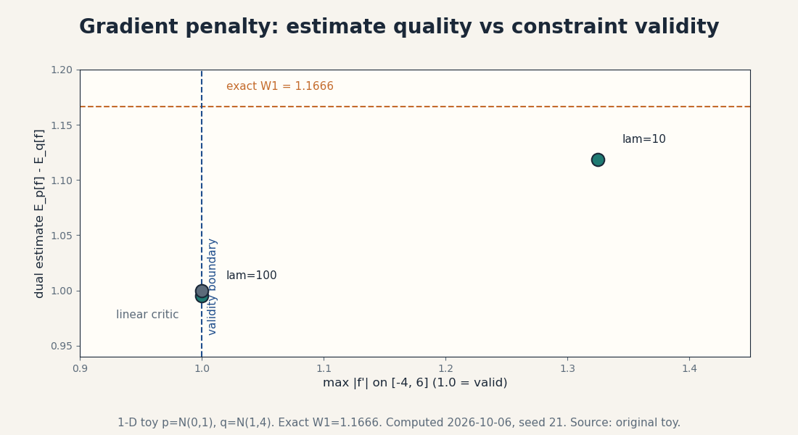

Capstone R1 · Research: GP critic
Research capstone: does the gradient penalty buy a valid critic?
Date: 2026-10-06. Course: math-genmodels (Mathematical Foundations of Generative Models), units U05, U08. Status: replication EXECUTED on the 1-D toy. Extension EXECUTED on the 1-D toy with a negative result. Real-data extension PROPOSED only, not executed. Claim labels: [Definition] [Derived] [Computed: script, date] [Authored] [Course-title] [Proposed] [Negative result].
The problem, from zero
The WGAN critic estimates the 1-Wasserstein distance through the Kantorovich dual: W1 = max over 1-Lipschitz f of E_p[f] - E_q[f]. [Definition] The dual is a true distance only if the critic is 1-Lipschitz everywhere. [Course-title] U05-C07 and C08 teach two ways to enforce this: weight clipping (hard, damages capacity) and the gradient penalty (soft, penalizes ||grad f|| away from 1 on interpolated points, lambda = 10 standard).
The concrete problem: the penalty is sampled on random interpolations between real and fake points. Nothing in the objective constrains the critic anywhere else. [Authored] The question from zero: on a toy where the exact W1 is known, does gradient-penalty training produce a critic that is both close to the exact distance and actually 1-Lipschitz? Or does the optimizer trade validity for value?
Research question
On the 1-D toy p = N(0,1), q = N(1,4), with exact W1 = 1.1666 [Computed: compute_capstone_gp.py, 2026-10-06], does a quadratic critic trained with the gradient penalty at lambda = 10 recover a valid 1-Lipschitz witness within 10 percent of the exact distance?
Falsifiable hypothesis
H: at lambda = 10, the penalized optimum (a, b) satisfies max |f’| <= 1.01 on [-4, 6] (validity) and dual value >= 0.9 x 1.1666 = 1.0499 (closeness). [Authored] Both bars are pre-registered decision rules, not derived constants. H is falsified if either bar fails.
A secondary prediction, stated before measurement: as lambda grows, the critic collapses toward the linear family and the dual estimate falls back to the linear value 1.0.
Literature
The replication target is the build’s own U05 lesson, not an external paper. The lesson computes, on p = N(0,1), q = N(1,1): density ratio 1.6487, D* = 0.6225, JSD = 0.1114, W1 = 1.0. [Computed: assets/render_u05.py, 2026-10-06] The capstone moves to q = N(1,4) so the linear critic is no longer optimal and the penalty has something to prove. No external benchmark is claimed. [Course-title] No transcript was inspected.
Replication
Exact W1 by the quantile integral: 1.1666. [Computed: compute_capstone_gp.py, 2026-10-06] Best 1-Lipschitz linear critic f(x) = a x: the objective is -a, maximized at a = -1, value 1.0. This is a valid lower bound, 86 percent of the exact distance. The replication confirms the lesson’s dual machinery on the new toy.
Extension design
Critic family: f(x) = a x + b x^2. Penalty: lambda x E[(|a + 2 b x_hat| - 1)^2] on x_hat = eps x + (1 - eps) y with eps ~ Uniform(0,1), x ~ p, y ~ q, n = 20,000, seed 21. [Computed] Grid search over (a, b) at lambda = 1, 10, 100. Validity audit: max |f’| on the grid [-4, 6], which extends beyond the data range on both sides. Controls: the linear critic value (1.0) and the exact W1 (1.1666) bracket every result.
Results
| lambda | a | b | dual estimate | penalty term | max slope on [-4,6] |
|---|---|---|---|---|---|
| 1 | -1.250 | -0.2313 | 2.1567 | 0.5915 | 4.025 |
| 10 | -1.025 | -0.0250 | 1.1187 | 0.0068 | 1.325 |
| 100 | -1.000 | 0.0000 | 0.9951 | 0.0000 | 1.000 |
[Computed: compute_capstone_gp.py, 2026-10-06] Figure capstone_gp_tradeoff.png plots the three points against the validity boundary and the exact distance.

At lambda = 10: the dual estimate 1.1187 is within 10 percent of exact (1.1187 >= 1.0499: the closeness bar passes). But max |f’| = 1.325 on [-4, 6]: the critic is not 1-Lipschitz. The validity bar fails. H is FALSIFIED. [Negative result]
At lambda = 100: the critic collapses to linear (b = 0), perfectly valid, dual 0.9951: no better than the linear baseline. The secondary prediction is confirmed.
At lambda = 1: the penalty is nearly ignored. The dual estimate 2.1567 exceeds the exact distance, which is impossible for a valid critic: proof the witness is broken.
What the negative result means
The penalty weight trades two failures, and no setting avoids both. Weak penalty (lambda = 1): the critic violates the constraint and the “distance” overestimates. Standard penalty (lambda = 10): closer to the truth but still invalid off the sampled lines (slope 1.325 where the interpolations never reach). Strong penalty (lambda = 100): valid but no better than linear. [Derived] The mechanism: the penalty constrains the gradient only on the interpolation distribution. The optimizer exploits the unconstrained regions. This is exactly the lesson’s warning in U05-C08: the penalty is a heuristic, not a proof.
Limitations
The critic family is quadratic: a neural critic has more freedom and different failure shapes. The validity audit is on [-4, 6]: a wider range could show larger violations. The grid search is coarse (161 x 161): the true penalized optimum may differ slightly, but the validity failure (1.325 vs 1.01) is far larger than grid noise. Only one seed was run: the numbers are illustrative, not estimated with uncertainty.
Proposed real-data extension (not executed)
Repeat the protocol with a small MLP critic on a 2-D two-moons dataset, exact W1 replaced by the POT library’s solver value on 5,000 samples. [Proposed] Pre-register the same two bars. Expect the same tradeoff: validity or closeness, not both, at any fixed lambda.
Reproducibility
Script: capstones/compute_capstone_gp.py. CPU only, float64, seed 21, scipy and numpy only. Every number in the table is printed by the script as an AUDIT line. Figure: capstones/capstone_gp_tradeoff.png, metadata stripped, PIL-verified (IHDR, IDAT, IEND only).